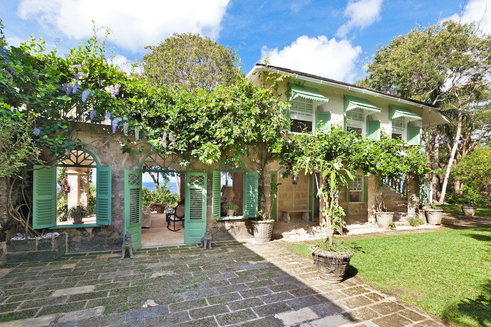
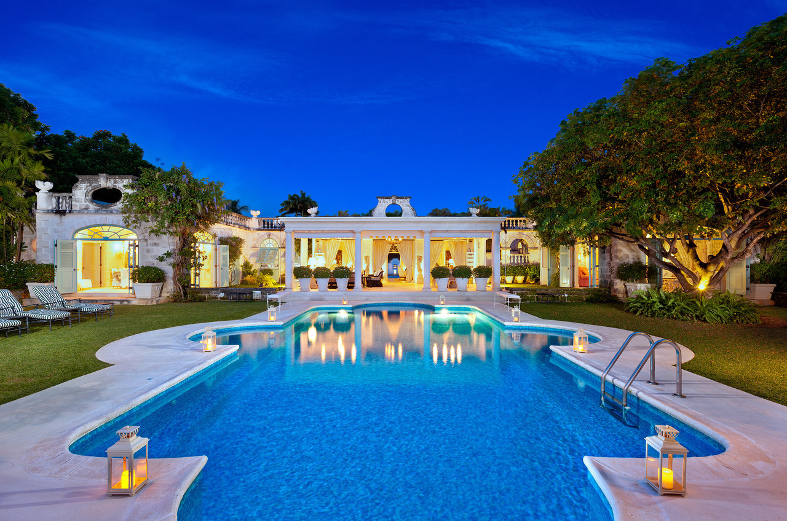

Oliver Messel epitomised the sophisticated and fashionable in mid-20th century theatre. He began work in the 1920s, when the detailed style of realism had given way to a more selective, distilled truth.
Standing dramatically on a private peninsula at Mustique's southern tip, this legendary villa, previously featured in Architectural Digest, was designed by Oliver Messel for HRH The Princess Margaret, Countess of Snowdon.
Made of the island’s traditional coral stone and is full of Messel trademarks – slender Greek columns, flattened arches, floors of cement scored to look like tiles. .
A fine example of his distinctive style, expertly merging the interior and exterior living spaces.
